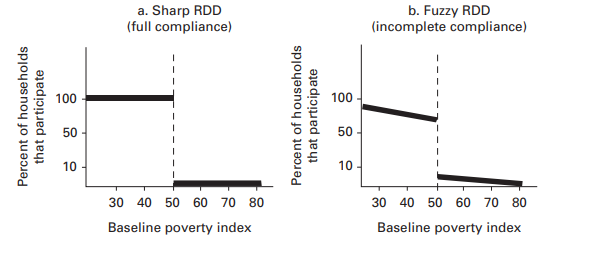
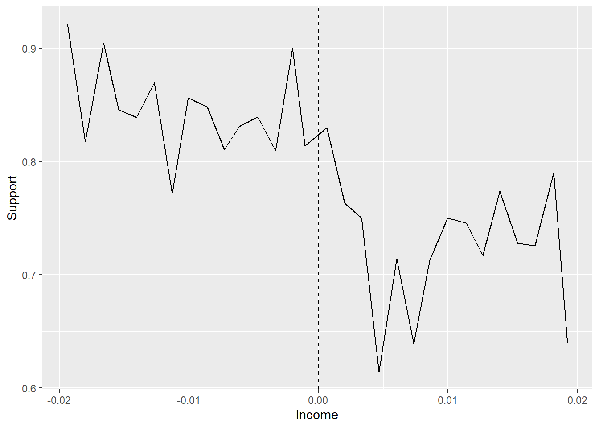

This method estimates the impact of an intervention by using a cut-off threshold to assign the intervention. The method relies on the assumption that the individuals just below and above a cutoff threshold will be similar, with the only significant difference between the 2 groups being whether they received the intervention or not. By comparing the value of the outcome variable for the individuals just above and below the cut-off threshold, the method infers the impact of the intervention (Treasury 2020).
How is it used?
The method was first used to estimate the impact of a merit-based scholarship scheme by Thistlewaite and Campbell (1960). Simply comparing the attainment grades of students who were given the scholarship versus those who didn’t would lead to a biased estimate of the impact of the scheme, because more able students were given the scholarship so would likely have better attainment whether they received the scholarship or not. To overcome this, the students who were only just eligible for the scholarship (who only just passed the scholarship test) were compared with those who only just missed the cut-off grade for the scholarship award. These “only just” unsuccessful students were very similar in their ability to those who were “only just” successful so they made a good comparison group. By comparing the outcomes of both groups in later years, the impact of the scholarship could be estimated (Treasury 2020).
What are the pros and cons?
Pros:
Can be useful method where randomisation is not possible in the intervention design.
Cons:
The method only allows estimation of the impact of the intervention for individuals close to the cut-off (local average treatment effect). The effect of the intervention may differ for those individuals further away from the cut-off.
As with other quasi-experimental methods, many assumptions must be made in order to assert attribution (Treasury 2020).
ggplot(aes(x, y3, colour =factor(D)), data = dat) +geom_point(alpha =0.2) +geom_vline(xintercept =140, colour ="grey", linetype =2) +stat_smooth(method ="loess", se = F) +labs(x ="Test score (X)", y ="Potential Outcome (Y)")
`geom_smooth()` using formula = 'y ~ x'
Code
# library(stargazer)
Please cite as:
Hlavac, Marek (2022). stargazer: Well-Formatted Regression and Summary Statistics Tables.
R package version 5.2.3. https://CRAN.R-project.org/package=stargazer
Code
dat <-tibble(x =rnorm(1000, 100, 50)) %>%mutate(x =case_when(x <0~0, TRUE~ x),D =case_when(x >140~1, TRUE~0),x2 = x*x,x3 = x*x*x,y3 =10000+0* D -100* x + x2 +rnorm(1000, 0, 1000) ) %>%filter(x <280)regression <-lm(y3 ~ D*., data = dat)stargazer(regression, type ="text")
Gertler et al. (2016) provides an introduction to RDD, stating the four main conditions that are required to apply RDD, a description of fuzzy and sharp RDD, steps on how to check the validity of RDD and limitations and interpretations of RDD.
Introduction
Social programmes often have eligability indices that determine who can and cannot signup.
Examples include targeted antipoverty programmes based on means. Tests scores.
Regression discontinuity design (RDD) is an impact evaluation method that is adequate for programs that use a continuous index to rank potential participants and that have a cutoff point along the index that determines whether or not potential participants are eligible to receive the program.
Conditions
To apply RDD 4 main conditions must be met:
The index must rank people in a continuous way. By contrast, variables that have discrete categories cannot be ranked.
There must be a clear defined cutoff score. The value above or below that the population is eligable for the programme.
The cutoff must be unique to the programme of interest. There must be no other programme, apart from the one to be evaluated that uses the same cutoff score.
The score of a particular individual or unit cannot be manipuated by data collectors, beneficiaries, administrators, or politicians.
RDD esitmate impact around the eligability cutoff as difference between average outcome for units on the treated side of eligability cutoff and average outcome of units on the untreated (comparison) side of the cutoff.
An example based on agriculture where the scheme is determine by hectare of land is provided.
It makes the point that since the comparison group is made up of farm just above the eligability threshold, teh impact given by RDD is valid only locally. Therefore we obtain an estimate of the Local Average Treatment Effect (LATE). The RDD will not be able to identify the impact on the smallest farms.
An advantage is that when the eligability rule is applied, not eligable units need ot be left untreated for the purpose of the impact evaluation. The trade off is that observations far away from the cutoff will not be known.
Fuzzy RDD
Fuzzy RDD. Some units who qualify for the programme may not opt to participate. Or others may find a way to participate even if they are on the other side of the line.
When all units comply with the assignment that corresponds to them on the basis of their eligibility index, we say that the RDD is “sharp,” while if there is noncompliance on either side of the cutoff , then we say that the RDD is “fuzzy”.
If the RDD is fuzzy, we can use the instrumental variable approach to correct for the noncompliance. In the case of randomized assignment with noncompliance, we used the randomized assignment as the instrumental variable that helped us correct for noncompliance.
In the case of RDD, we can use the original assignment based on the eligibility index as the instrumental variable. Doing so has a drawback, though: our instrumental RDD impact estimate will be further localized—in the sense that it is no longer valid to all observations close to the cutoff , but instead represents the impact for the subgroup of the population that is located close to the cutoff point and that participates in the program only because of the eligibility criteria.

Gertler et al 2016 Figure 6.3
Testing Validity of RDD
For RDD to provide unbiased estimates of LATE there must be no manipulation of the eligibility index around the cutoff.
A tell tale sign of manipuation is where there is bunching around the cutoff, e.g. look at the percentage of households at the cuttoff. A second test is to plot the eligability index against the outcome index at baseline and check there are no discontinuities or jump right around the cutoff.
Limitations and Interpretations
Because the RDD method estimates the impact of the program around the cutoff score, or locally, the estimate cannot necessarily be generalized to units whose scores are further away from the cutoff score: that is, where eligible and ineligible individuals may not be as similar.
Checklist
Is the index continuous around the cutoff score at the time of the baseline?
Is there any evidence of noncompliance with the rule that determines eligibility for treatment? Test whether all eligible units and no ineligible units have received the treatment. If you find noncompliance, you will need to combine RDD with an instrumental variable approach to correct for this "fuzzy discontinuity."
Is there any evidence that index scores may have been manipulated in order to influence who qualified for the program? Test whether the distribution of the index score is smooth at the cutoff point. If you fi nd evidence of "bunching" of index scores either above or below the cutoff point, this might indicate manipulation.
Is the cutoff unique to the program being evaluated, or is the cutoff used by other programs as well?
For a review of practical issues in implementing RDD, see Imbens and Lemieux (2008)
notes RDD arguably has the strongest internal validity of any quasi-experimental design and external validity may be limited.
identified 3 threats to RDD (other variables change discontinuously at the cutoff, discontinuities at other values of the assignment variable, manipulation of the assignment variable).
provides 5 specification checks:
discontinuities in the average covariates
discontinuity in distribution of forcing variables
discontinuity in average outcome at other values
sensitivity to bandwidth choice
fuzzy RD design
regression kink design.
provides a case study on fuzzy RDD (Marie (2009)) that shows recidivism for those who leave prison early falls.
provides a case study on manipulation (Caughey and Sekhon (2010)) and provide examples of the Lee and McCrary tests that cast doubt on (Lee, Moretti, and Butler (2004)). Dehejia (2007) concludes that LMB did not do enough to justify functional form or sensitivity to different bandwidth.
Lesson from CS and LMB are to try and find problems in your design before someone does it for you, identify and collect accurate data that are likely to reveal something about your cut off point, automatic bandwidth algoritms do not gaurantee good results. They are just a starting point.
provide guide to practise.
set out 3 steps to sharp RD analysis:
graph the data showing the average outcome value over differnt bins. Need to be precise enough so that plots looks smooth on either side of the cutoff value, but at the same time small enough to make the jump around the kickoff value clear.
Estimate treatment effect by running regression on both sides of the cutoff point.
The robustness of the results should be assessed by employing various specification tests.
sets out 3 steps for fuzzy rd analysis:
graph like SRD but also graph probability of treatment.
Estimate treatment effect using 2SLS which is numerically equivalet to computing the ratio in the estimate of the jump, at the cutoff.
assess robustess of the results.
A checklist for evaluating a RD paper:
treatment changes discontinuously at the cutoff?
outcomes change discontinuously at the cutoff?
other covariates do not change at the cutoff?
pre-treatment outcomes do not change at the cutoff?
there is no manipuation of the assignment variable? (bunching near the cutoff) *are the basic results evident from a single graph?
are the results robust to different functional form assumptions around the assignment varibles?
could other possibly unobserved treatments change discontinuously at the cutoff?
external validity - are cases near the cutoff different from cases far from the cutoff in other ways? Do these differences make them more of less relevant from a theoretical or policy perspective?
Huntingdon-Klein (2021) provides an example of comparing US to Mexico based on distance from the border.
Terminology
Running variable. The running variable, also known as a forcing variable, is the variable that determines whether you’re treated or not. For example, if a doctor takes your blood pressure and will assign you a blood-pressure reducing medicine if your systolic blood pressure is above 135, then your blood pressure is the running variable.
Cutoff. The cutoff is the value of the running variable that determines whether you get treatment. Using the same blood pressure example, the cutoff in this case is a systolic blood pressure of 135. If you’re above 135, you get the medicine. If you’re below 135, you don’t.
Bandwidth. It’s reasonable to think that people just barely to either side of the cutoff are basically the same other than for the cutoff. But people farther away (say, downtown San Diego vs. further inside of Mexico) might be different for reasons other than the cutoff. The bandwidth is how much area around the cutoff you’re willing to consider comparable. Ten feet to either side of the US/Mexico border? 1000 feet? 80 miles?
Examples, money qualify for programme, test for education, geography - country and policy, politics win election or do not.
What we’re looking for is some sort of treatment that is assigned based on a cutoff. There’s the running variable that determines treatment. And there’s some cutoff value. If you’re just to one side of the cutoff value, you don’t get treated. If you’re to the other side, you do get treated.
Since our strategy is going to be assuming that people close to the cutoff are effectively randomly assigned there shouldn’t be any obvious impediments to that randomness - people shouldn’t be able to manipulate the running variable so as to choose their own treatment, and also the people who choose what the cutoff is shouldn’t be able to make that choice in response to finding out who has which running variable values.
Battistin et al. (2009) are one paper of many that apply fuzzy regression discontinuity to retirement. In their paper, they look at consumption and how it changes at the point of retirement. Specifically, they want to know if retirement causes consumption to immediately drop and if it does drop, why?
This is a simple linear approach to regression discontinuity, where \(\Running\) is the running variable which we have centred around the cutoff using \((Running-Cutoff)\). This takes a negative value to the left of the cutoff, zero at the cutoff, and a positive value to the right. We’re talking about a sharp regression discontinuity here, so \(Treated\) is both an indicator for being treated and an indicator for being above the cutoff - these are the same thing. The model is generally estimated using heteroskedasticity-robust standard errors, as one might expect the discontinuity and general shape of the line we’re fitting to exhibit heteroskedasticity in most cases.We’ll ignore the issue of a bandwidth for now and come back to it later - this regression approach can be applied whether you use all the data or limit yourself to a bandwidth around the cutoff.
Notice the lack of control variables In most other chapters, when I do this it’s to help focus your attention on the design. Here, it’s very intentional. The whole idea of regression discontinuity is that you have nearly random assignment on either side of the cutoff. You shouldn’t need control variables because the design itself should close any back doors. No open back doors? No need for controls. Adding controls implies you don’t believe the assumptions necessary for the regression discontinuity method to work, and makes the whole thing becomes a bit suspicious to any readers.
R code
Let’s code up some regression discontinuity! I’m going to do this in two ways. First I’m going to run a plain-ol’ ordinary least squares model with a bandwidth and kernel weight applied, with heteroskedasticity-robust standard errors. However, there are a number of other adjustments we’ll be talking about in this chapter, and it can be a good idea to pass this task off to a package that knows what it’s doing. I see no point in showing you code you’re unlikely to use just because we haven’t gotten to the relevant point in the chapter yet. So we’ll be using those specialized commands as well, and I’ll talk later about some of the extra stuff they’re doing for us.
For this example we’re going to use data from Government Transfers and Political Support by Manacorda, Miguel, and Vigorito (2011Manacorda, Marco, Edward Miguel, and Andrea Vigorito. 2011. “Government Transfers and Political Support.” American Economic Journal: Applied Economics 3 (3): 1–28.). This paper looks at a large poverty alleviation program in Uruguay which cut a sizeable check to a large portion of the population. They are interested in whether receiving those funds made people more likely to support the newly-installed center-left government that sent them.
Who got the payments? You had to have an income low enough. But they didn’t exactly use income as a running variable; that might have been too easy to manipulate. Instead, the government used a bunch of factors - housing, work, reported income, schooling - and predicted what your income would be from that. Then, the predicted income was the running variable, and treatment was assigned based on being below a cutoff. About 14% of the population ended up getting payments.
The researchers polled a bunch of people near the income cutoff to check their support for the government afterwards. Did people just below the income cutoff support the government more than those just above?
The data set we have on government transfers comes with the predicted-income variable pre-centered so the cutoff is at zero. Then, support for the government takes three values: you think they’re better than the previous government (1), the same (1/2) or worse (0). The data only includes individuals near the cutoff - the centered-income variable in the data only goes from -.02 to .02.
Before we estimate our model, let’s do a nearly-compulsory graphical regression discontinuity check so we can confirm that there does appear to be some sort of discontinuity where we expect it. This is a “plot of binned means.” There are some preprogrammed ways to do this like rdplot in R or Stata in the rdrobust package or binscatter in Stata from the binscatter package, but this is easy enough that we may as well do it by hand and flex those graphing muscles.
For one of these graphs, you generally want to (1) slice the running variable up into bins (making sure the cutoff is the edge between two bins), (2) take the mean of the outcome within each of the bins, and (3) plot the result, with a vertical line at the cutoff so you can see where the cutoff is. Then you’d generally repeat the process with treatment instead of the outcome to produce a graph like below.
Code
library(tidyverse)gt <- causaldata::gov_transfers# Use cut() to create bins, using breaks to make sure it breaks at 0# (-15:15)*.02/15 gives 15 breaks from -.02 to .02binned <- gt %>%mutate(Inc_Bins =cut(Income_Centered,breaks = (-15:15)*(.02/15))) %>%group_by(Inc_Bins) %>%summarize(Support =mean(Support),Income =mean(Income_Centered))# Taking the mean of Income lets us plot data roughly at the bin midpointsggplot(binned, aes(x = Income, y = Support)) +geom_line() +# Add a cutoff linegeom_vline(aes(xintercept =0), linetype ='dashed')

Now that we have our graph in mind, we can actually estimate our model. We’ll start doing it with OLS and a second-order polynomial, and then we’ll do a linear model with a triangular kernel weight, limiting the bandwidth around the cutoff to .01 on either side. The bandwidth in this case isn’t super necessary - the data is already limited to .02 on either side around the cutoff - but this is just a demonstration.
It’s important to note that the first step of doing regression discontinuity with OLS is to center the running variable around the cutoff. This is as simple as making the variable \(RunningVariable - Cutoff\), translated into whatever language you use. The second step would then be to create a “treated” variable \(RunningVariable < Cutoff\) (since treatment is applied below the cutoff in this instance). But in this case, the running variable comes pre-centered (\(IncomeCentred\)) and the below-cutoff treatment variable is already in the data (\(Participation\) ) so I’ll leave those parts out.
Code
library(tidyverse); library(modelsummary)
Warning: package 'modelsummary' was built under R version 4.3.1
Code
gt <- causaldata::gov_transfers# Linear term and a squared term with "treated" interactionsm <-lm(Support ~ Income_Centered*Participation +I(Income_Centered^2)*Participation, data = gt)# Add a triangular kernel weightkweight <-function(x) {# To start at a weight of 0 at x = 0, and impose a bandwidth of .01, # we need a "slope" of -1/.01 = 100, # and to go in either direction use the absolute value w <-1-100*abs(x)# if further away than .01, the weight is 0, not negative w <-ifelse(w <0, 0, w)return(w)}# Run the same model but with the weightmw <-lm(Support ~ Income_Centered*Participation, data = gt,weights =kweight(Income_Centered))# See the results with heteroskedasticity-robust SEsmsummary(list('Quadratic'= m, 'Linear with Kernel Weight'= mw), stars =c('*'= .1, '**'= .05, '***'= .01), vcov ='robust')
Warning in residuals^2/(1 - diaghat)^2: longer object length is not a multiple
of shorter object length
Warning in residuals^2/(1 - diaghat)^2: longer object length is not a multiple
of shorter object length
https://rdpackages.github.io/
Code
library(tidyverse); library(rdrobust)
Warning: package 'rdrobust' was built under R version 4.3.1
Code
gt <- causaldata::gov_transfers# Estimate regression discontinuity and plot itm <-rdrobust(gt$Support, gt$Income_Centered, c =0)
Warning in rdrobust(gt$Support, gt$Income_Centered, c = 0): Mass points
detected in the running variable.
Code
summary(m)
Sharp RD estimates using local polynomial regression.
Number of Obs. 1948
BW type mserd
Kernel Triangular
VCE method NN
Number of Obs. 1127 821
Eff. Number of Obs. 291 194
Order est. (p) 1 1
Order bias (q) 2 2
BW est. (h) 0.005 0.005
BW bias (b) 0.010 0.010
rho (h/b) 0.509 0.509
Unique Obs. 841 639
=============================================================================
Method Coef. Std. Err. z P>|z| [ 95% C.I. ]
=============================================================================
Conventional 0.025 0.062 0.396 0.692 [-0.098 , 0.147]
Robust - - 0.624 0.533 [-0.097 , 0.188]
=============================================================================
Code
# Note, by default, rdrobust and rdplot use different numbers# of polynomial terms. You can set the p option to standardize them.rdplot(gt$Support, gt$Income_Centered)
[1] "Mass points detected in the running variable."
Warning: package 'fixest' was built under R version 4.3.1
Code
vet <- causaldata::mortgages# Create an "above-cutoff" variable as the instrumentvet <- vet %>%mutate(above = qob_minus_kw >0)# Impose a bandwidth of 12 quarters on either sidevet <- vet %>%filter(abs(qob_minus_kw) <12)m <-feols(home_ownership ~ nonwhite |# Control for race bpl + qob |# fixed effect controls qob_minus_kw*vet_wwko ~# Instrument our standard RDD qob_minus_kw*above, # with being above the cutoffse ='hetero', # heteroskedasticity-robust SEsdata = vet) # And look at the resultsmsummary(m, stars =c('*'= .1, '**'= .05, '***'= .01))
Code
library(tidyverse); library(rdrobust)vet <- causaldata::mortgages# It will apply a bandwidth anyway, but having it# check the whole bandwidth space will be slow. So let's# pre-limit it to a reasonable range of 12 quartersvet <- vet %>%filter(abs(qob_minus_kw) <=12)# Create our matrix of controlscontrols <- vet %>%select(nonwhite, bpl, qob) %>%mutate(qob =factor(qob))# and make it a matrix with dummiesconmatrix <-model.matrix(~., data = controls)# This is fairly slow due to the controls, beware!m <-rdrobust(vet$home_ownership, vet$qob_minus_kw,fuzzy = vet$vet_wwko,c =0,covs = conmatrix)
Warning in rdrobust(vet$home_ownership, vet$qob_minus_kw, fuzzy = vet$vet_wwko,
: Multicollinearity issue detected in covs. Redundant covariates dropped.
Warning in rdrobust(vet$home_ownership, vet$qob_minus_kw, fuzzy = vet$vet_wwko,
: Mass points detected in the running variable.
Code
summary(m)
Covariate-adjusted Fuzzy RD estimates using local polynomial regression.
Number of Obs. 56901
BW type mserd
Kernel Triangular
VCE method NN
Number of Obs. 28776 28125
Eff. Number of Obs. 6911 6756
Order est. (p) 1 1
Order bias (q) 2 2
BW est. (h) 3.387 3.387
BW bias (b) 5.354 5.354
rho (h/b) 0.633 0.633
Unique Obs. 12 12
First-stage estimates.
=============================================================================
Method Coef. Std. Err. z P>|z| [ 95% C.I. ]
=============================================================================
Conventional 0.018 0.018 0.964 0.335 [-0.018 , 0.053]
Robust - - 2.244 0.025 [0.006 , 0.094]
=============================================================================
Treatment effect estimates.
=============================================================================
Method Coef. Std. Err. z P>|z| [ 95% C.I. ]
=============================================================================
Conventional -5.377 5.716 -0.941 0.347 [-16.581 , 5.827]
Robust - - 0.513 0.608 [-10.182 , 17.408]
=============================================================================
Battistin, Erich, Agar Brugiavini, Enrico Rettore, and Guglielmo Weber. 2009. “The Retirement Consumption Puzzle: Evidence from a Regression Discontinuity Approach.”American Economic Review 99 (5): 2209–26. https://doi.org/10.1257/aer.99.5.2209.
Caughey, Devin, and Jasjeet S. Sekhon. 2010. “Regression-Discontinuity Designs and Popular Elections : Implications of Pro-Incumbent Bias in Close u . S . House Races.” In.
Gertler, Paul J., Sebastian Martinez, Patrick Premand, Laura B Rawlings, and Christel M J Vermeersch. 2016. Impact Evaluation in Practise. 2nd ed. Inter-American Development Bank; World Bank. https://openknowledge.worldbank.org/handle/10986/25030.
Huntingdon-Klein, Nick. 2021. The Effect: An Introduction to Research Design and Causality. Boca Raton, Florida: Chapman; Hall/CRC. https://theeffectbook.net.
Imbens, Guido W., and Thomas Lemieux. 2008. “Regression Discontinuity Designs: A Guide to Practice.”Journal of Econometrics 142 (2): 615–35. https://doi.org/https://doi.org/10.1016/j.jeconom.2007.05.001.
Lee, David S., Enrico Moretti, and Matthew J. Butler. 2004. “Do Voters Affect or Elect Policies? Evidence from the u. S. House.”Quarterly Journal of Economics 119: 807–59.
Thistlewaite, Donald L., and Donald T. Campbell. 1960. “Regression-Discontinuity Analysis: An Alternative to the Ex-Post Facto Experiment.”Observational Studies 3: 119–28.